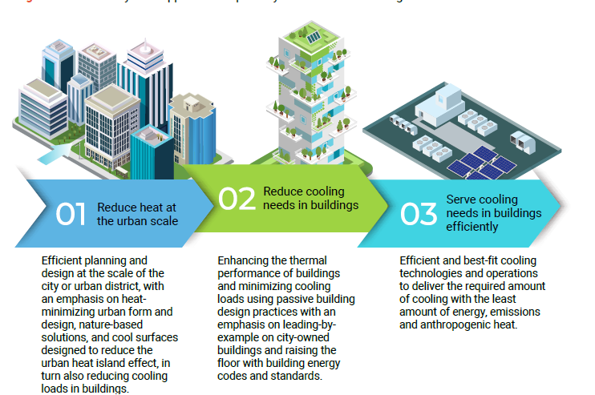
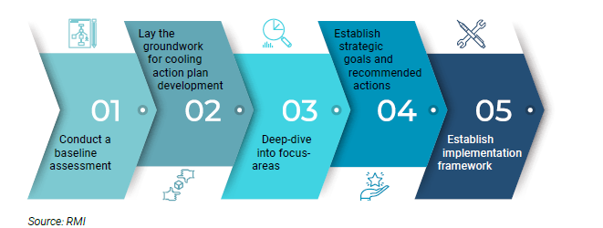
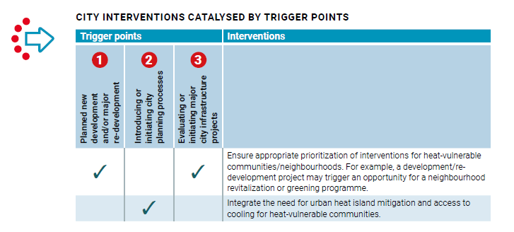
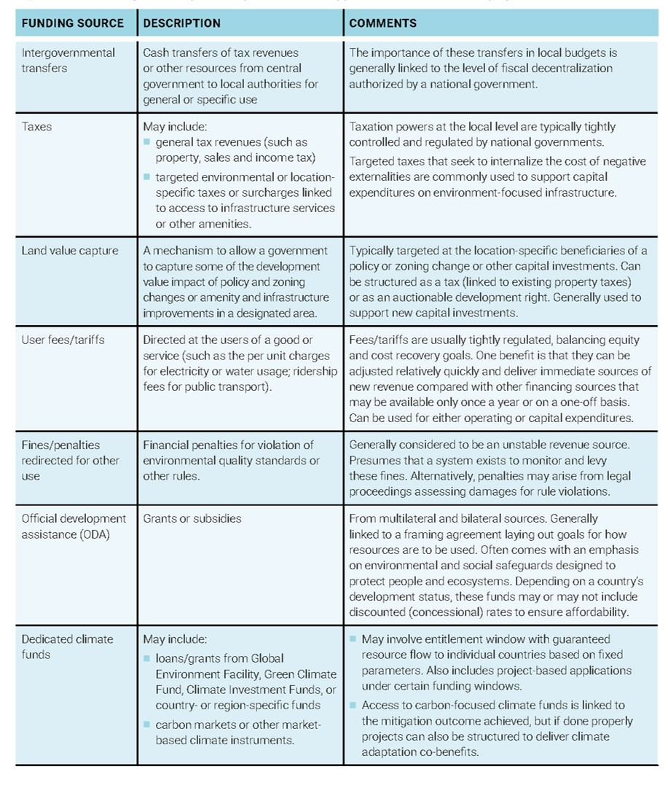
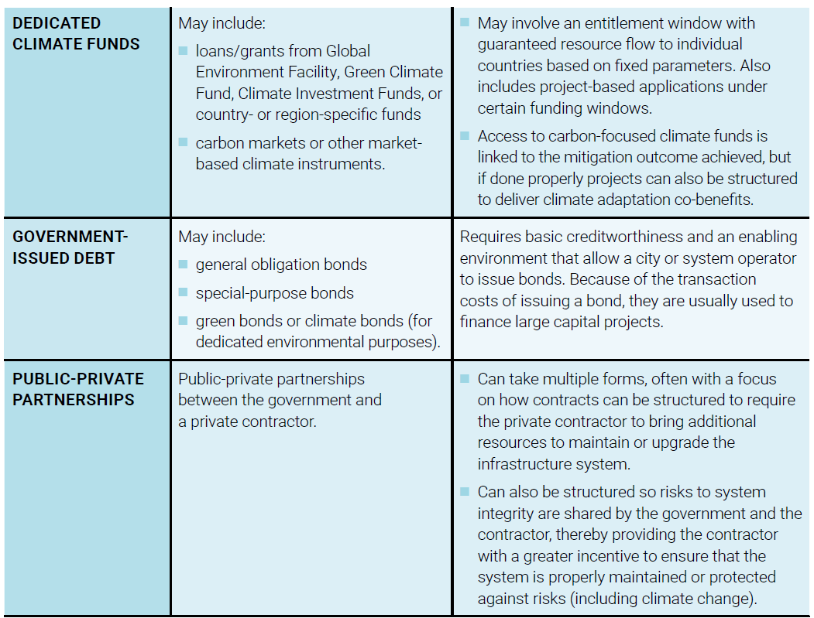
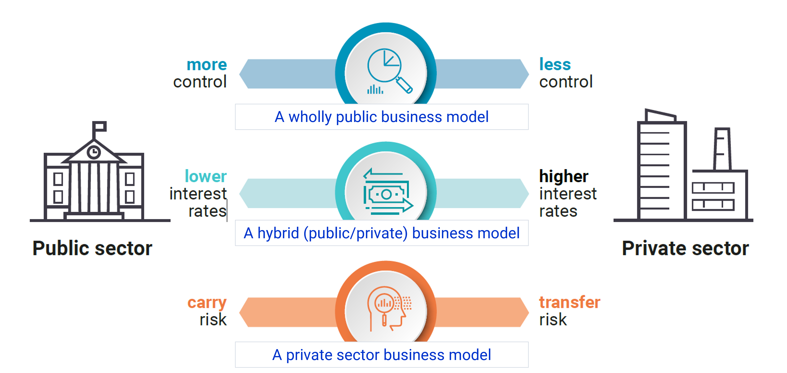
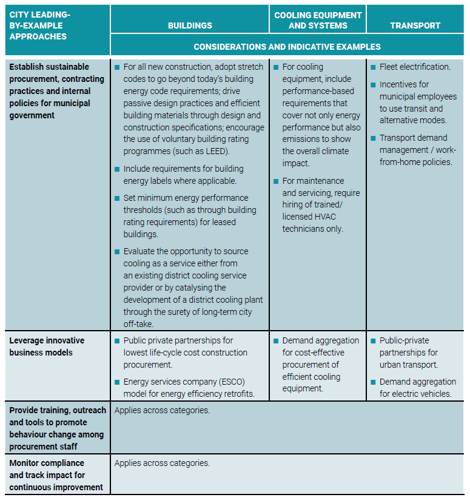
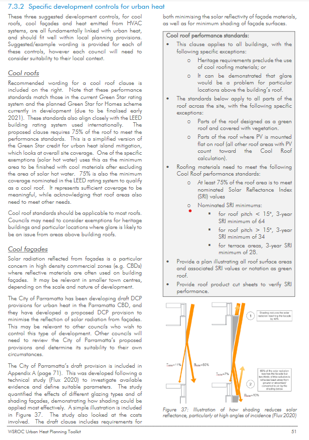

Temperature
This week we focused on how a global challenge/ issue “Urban Heat Island” (Refer to Week 4 to know about Urban Heat Island) can be approached at a local or national level using specific approaches.
In this segment, we intend to focus on the document “Beating the Heat: A Sustainable Cooling Handbook for Cities | NDC Action Project” (n.d.a) and understand the envisaged interventions that can be addressed by remote sensing.

| Step 1 | Step 2 | Step 3 |
|---|---|---|
| focused on heat reduction at the urban scale | focused on the building scale | focused on the building scale |
Barriers to Sustainable Urban Cooling ::: column-body - Lack of awareness - Lack of supportive policies and regulations - Financial Barriers - First-cost bias - Split incentives - Limited Institutional Capacities - Complexity of the solution set :::

| point 54 | |
|---|---|
| New Urban Agenda | Point- 54, 79, 37 |
| Sustainable Development Goals | Goal- 11 |
| COP26- beat the heat handbook |
Examples
This segment shall focus on Beat the heat hand book and its examples.
| Location | Main Features | |
|---|---|---|
| Singapore | Public Sector Leadership In Building Energy Efficiency And Sustainable Procurement – Singapore | |
| Washington, USA | Comprehensive Management of Municipal Buildings Portfolio – City of Tacoma, Washington, United States | |
| Shenzhen, China | Leading the way in environment-friendly transport – City of Shenzhen, China | |
Recommended City Actions:
The image below indicates 3 trigger points and the suggested interventions.

The viability of Saving Lives = COST
Every Intervention has a cost. So who would fund it? How?
Funding and Financing sources “Typical range of funding sources”- “Beating the Heat: A Sustainable Cooling Handbook for Cities | NDC Action Project” (n.d.a)
- Intergovernmental transfers
- Taxes
- Land value capture
- User fees/tariffs
- Fines/penalties redirected for other use
- Official development assistance (ODA)
- Dedicated climate funds
“the typical range of funding sources, the actual sources will be very different for cities in the least developed countries (LDCs) than it is for cities in the high-income developed countries – and across the spectrum between them – where city revenue sources are very different.”- “Beating the Heat: A Sustainable Cooling Handbook for Cities | NDC Action Project” (n.d.a)
How?
Eg: Under developed revenue source (United Nations 2017)
- LDCs and many low-middle income countries: 0.03 % of national GDP
- High Income Countries: 0.89 % of national GDP
Funding sources for the LDCs and the spectrum in between
- Opportunities to secure technical and funding assistance from international bilateral and multinational development Agencies

Financing sources for city interventions:
“Financing is not a revenue source but a debt obligation that will need to be serviced with returns derived from the underlying investment or from future revenue sources.” “Beating the Heat: A Sustainable Cooling Handbook for Cities | NDC Action Project” (n.d.a)
- Dedicated Climate Fund
- Government- Issues Debt (Issuing bonds)
- General obligation (GO) bond
- Revenue bonds
- Special or limited tax bonds
- Tax credit bonds
- Green bonds
- Climate bonds
- Impact bonds / social impact bonds
- Credit Enhancement
- PPP

- Lack of purpose financing (Emergent Nations)- market barrier
- tied to market barriers
- Other Barriers
- Credit risk
- Performance risk
- Lack of access to affordable financing
- Financing mechanisms- TO- support private sector adoption
- Revolving loan funds
- Green credit lines
- Specialty lending entities and green banks
- Green mortgages
- PACE financing and EUF
::: column-body District cooling Business models
Technical Feasibility + Financial Feasibility= Model Selection (return on investment and control)
- Offset of high interest rates with Private entity financing with public sector support
- Risk mitigation
- Favorable economies :::

| Location | Highlights |
|---|---|
| Paris, France |
|
| GIFT city, Gujarat, India |
|
| Marina Bay District Cooling System, Singapore |
|
| Deep Lake Water District, Cooling System, Toronto, Canda |
|
| High Concentration of District Cooling Systems- Dubai, United Arab Emirates |
|
| Atlantic Station Chilled Water Plant- Atlanta, USA |
|
| District Cooling System- Northgate Cyber Zone, Philippines |
|
| District Cooling Plant- Megajana, Malaysia |
|
| Central Cooling Plant- Pearl River New City (Zhujiangxincheng), Guangzhou, China |
|
| La Alpujarra District Cooling Plant- Medellin, Colombia |
|
Source: “Beating the Heat: A Sustainable Cooling Handbook for Cities | NDC Action Project” (n.d.b)
Key approaches (leading cities) Below represented is an image showcasing key approaches for cities leading by example.

“city governments could undertake to support heat mitigation and the adoption of more climate-friendly cooling solutions on buildings and assets that they control” - HOW?
- Establishing Sustainable Procurement And Contracting Practices For Municipal Government
- Leveraging Innovative Business Models
- Energy services company (ESCO) model for energy efficiency retrofits
- Public-private partnerships
- Demand aggregation for cost-effective procurement of climate-friendly solutions
- Provide Training, Outreach And Tools To Promote Behaviour Change Among City Staff
- Monitoring Compliance And Tracking Impacts For Continuous Improvement
Application
Community - centric Interventions: to advance heat equity in cities = outcome > safety during high-heat > community engagement in mitigation (long term) > HOW? “Beating the Heat: A Sustainable Cooling Handbook for Cities | NDC Action Project” (n.d.a)
- Ensure
- Educate
- Enable
Key categories of innitative:
- Public cooling Infrastructure
- Community cooling centres
- Appropriate siting
- Targeted for specific populations
- Cost considerations for access
- Timely and tailored communication
- Providing essential amenities
- Public water features
- Hydration stations and drinking fountains
- Recreational water features
- Public transit stops – bus and train stations
- Appropriate design
- Siting
- Reducing wait times
Nature-based solutions and cooling surfaces (addressing Heat Inequity)
- Urban greening programmes in vulnerable neighbourhoods
- Planting and maintaining trees
- Reaching target communities
- Cool roof programmes targeting low-income communities and informal settlements
- Pilot projects on low-Income housing
- Dedicated funding
- Partnerships
- Educating and engaging the community
- Action Plans and warning systems for heat events:
- Announcing early
- Transparency
- Understanding the public
- Build capacity and leverage partnerships
- Heat-health alerts and warning systems
- Wellness check programmes
- Buddy systems
- Home visits
- Daily phone calls
- Heat-health hotlines (available during periods of heat)
- Data collection programmes

Heat-health alerts and warning systems
For example, over 100 cities and districts in India have set up heat alert systems with the support and guidance of the Indian Meteorological Department (IMD) and the National Disaster Management Authority. The IMD also provides over 350 cities with seasonal and daily temperature forecasts, which are a critical trigger for prompting early heat-warning communication by city officials (NRDC 2019).
Remote sensing can be introduced to achieve : “Data collection programmes” entailing Monitoring the impact
Heat events on health and well-being
Evaluate the effectiveness of heat action plans
Guide future allocation of resources and heat response
Urban Heat Island Interpretive Dance ….. SENTINEL 🖐️-2
Reflection
“leading by example” segments are predominantly showcased in a More Economically Developed Country, further laying the roadmap for further betterment.
The Handbook for Emergent Nations:
Addresses Emergent Nation barriers, especially suggesting various funding sources, and funding models, emphasizing on Private sector role.
Suggests low-cost interventions, focusing and mitigation measures - community/ human-centric
Economic development- is important- to create mitigating infrastructure, and adaptive interventions- Urban Scale (Step 1) and Building scale (Steps 2 & 3)
Remote sensing/ GIS as a tool-free access data- can help monitor these interventions.
- Emergent Nations: funding can be secured.